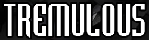
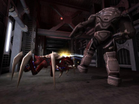
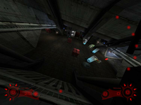
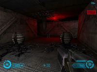
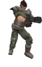
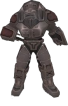
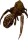
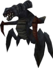

Tremulous
Dieser Artikel wurde für die folgenden Ubuntu-Versionen getestet:
Dieser Artikel ist mit keiner aktuell unterstützten Ubuntu-Version getestet! Bitte diesen Artikel testen und das getestet-Tag entsprechend anpassen.
Zum Verständnis dieses Artikels sind folgende Seiten hilfreich:
 Tremulous  ist ein freies, auf der ioQuake-Engine basierendes Spiel, das Elemente eines Ego-Shooters mit denen eines Strategiespiels verbindet und sich dabei nur auf den Mehrspielermodus konzentriert.
ist ein freies, auf der ioQuake-Engine basierendes Spiel, das Elemente eines Ego-Shooters mit denen eines Strategiespiels verbindet und sich dabei nur auf den Mehrspielermodus konzentriert.
Der Spieler kann zwischen Außerirdischen und Menschen wählen. Beide Teams spielen sich grundsätzlich anders. Während das menschliche Team vor allem mit Waffen gegen das andere Team vorgeht, nutzen die Außerirdischen fast ausschließlich Nahkampf-Angriffe.
Spieler beider Teams können Gebäude errichten. Diese Gebäude können vielerlei Funktionen erfüllen, geben den Teams aber vor allem die Möglichkeit, nach dem Tod wieder ins Spiel einzusteigen. Andere Gebäude haben heilende oder schadensverstärkende Wirkung, sind Verteidigungsanlagen und vieles mehr.
| Screenshots | ||
|  |  |  |
Installation¶
 mit
mit Benutzung/Konfiguration¶
Einführung¶
Eine ausführliche englischsprachige Anleitung findet man auf der offiziellen Homepage . Eine Deutsche Übersetzung im .PDF-Format kann man hier  (700KB) herunterladen.
(700KB) herunterladen.
Allgemeines¶
Wie schon erwähnt, muss man sich zuerst für ein Team entscheiden. Innerhalb des Teams gibt es zwei Klassen, eine Konstrukteurs- und eine Kämpferklasse. Der Spieler kann zu beginn oder nach seinem letzten Ableben entscheiden, in welcher Klasse er ins Spiel einsteigen möchte. Ein Wechsel zwischen den Klassen ist innerhalb eines Spiels nahezu jederzeit möglich.
Die Konstrukteure haben dafür zu sorgen, dass die Basis aufgebaut wird und beschädigte Konstruktionen repariert beziehungsweise nach einer Zerstörung wieder errichtet werden. Die Anzahl der Konstruktionen ist abhängig von Baupunkten, die nicht unbegrenzt zur Verfügung stehen. Verschiedene Gebäude benötigen eine unterschiedliche Anzahl an Punkten. Wird eine Konstruktion zerstört oder abgerissen, stehen die Punkte wieder zur Verfügung.
Abhängig von der Anzahl zerstörter Gegnern steigen die Teams eine Stufe auf (bis Stufe 3). Jede Stufe ermöglicht den Teams, neue Waffen zu benutzen und andere Konstruktionen zu errichten. Außerdem geben zerstörte Gegner den Team-Mitgliedern Credits bzw. Evolutionspunkte (Evos).
Ziel des Spiels ist es, das gegnerische Team vollständig auszulöschen. Das kann nur dadurch erreicht werden, dass den gegnerischen Team-Mitgliedern jegliche Möglichkeit genommen wird, wieder ins Spiel einzusteigen. Sind alle gegnerischen "Spawnpunkte" zerstört und alle verbliebenen Gegner vernichtet, gewinnt das übrig gebliebene Team.
Menschen (Humans)¶
 Die Menschen sind abhängig von ihrer Technik und ihrem Reaktor. Der Reaktor versorgt alle Konstruktionen mit Energie, daher müssen die Konstruktionen in einem gewissen Radius um den Reaktor angeordnet werden (es sei denn der Radius wird durch einen Repeater erweitert). Wird der Reaktor zerstört, verlieren alle Konstruktionen bis auf die "Spawns" (Telenode) solange ihre Funktion bis ein neuer Reaktor errichtet wurde (auch das Kaufen/aufladen von Waffen ist nicht mehr möglich). Ohne Reaktor ist es zudem nicht möglich, neue Konstruktionen zu errichten.
Abgeschossene Gegner geben den Menschen Credits, mit denen sie an der Waffenkammer (Armory) Waffen und Rüstungen kaufen können. Bessere Ausrüstungen kosten entsprechend mehr Credits. Stirbt der Spieler, ist die gekaufte Ausrüstung verloren und er hat wieder die Standardwaffe.
Menschen haben vor allem den Vorteil der Schussreichweite und der starken Verteidigungsanlagen. Ihre Nachteile sind, dass sie Lebenskraft nicht selbstständig regenerieren und Munition nur in ihrer Basis bekommen können.
Außerirdische (Aliens)¶
 Die Zentrale Konstruktion der Außerirdischen ist das Overmind. Im Gegensatz zu den Menschen können Aliens Konstruktionen in der Näher ihrer "Spawns" (Eggs) errichten, die überall platziert werden können. Sie sind somit in der Lage, Außenposten auf der gesamten Spielfläche zu verteilen. Stirbt das Overmind, verlieren alle Konstruktionen bis auf die "Spawns" (Eggs) solange ihre Funktion, bis ein neues Overmind errichtet wurde. Ohne Overmind ist es zudem nicht möglich, neue Konstruktionen zu errichten.
Außerirdische bekommen durch zerstörte Gegner Evolutionspunkte (Evos), durch die sie, wie der Name schon sagt, eine höhere Stufe der Evolution erreichen können (dafür muss ein Overmind errichtet sein). Allerdings ist ein Rückschritt nicht möglich. Stärkere Aliens kosten mehr Evolutionpunkte und der Spieler steigt nach seinem Tod wieder mit der niedrigsten Evolutionsstufe ins Spiel ein.
Einige Aliens haben die Fähigkeit, an Wänden und Decken entlangzulaufen, während andere in der Lage sind, mit Energiestößen umstehenden Feinde und Gebäuden Schaden zuzufügen. Aliens regenerieren ihre Lebenskraft selbstständig und brauchen daher keine Regeneration in ihrer Basis. Jedoch müssen Aliens fast immer sehr nahe an den Gegner heran kommen, da sie fast ausschließlich Nahkampfmethoden nutzen können. Auch sind ihre Verteidigungsanlagen wesentlich schwächer als die der Menschen.
Probleme¶
Zu hoher Ping¶
Zunächst sollte man bei der Wahl eines Servers auf einen niedrigen Ping achten. Ein Ping höher als ~75 ist nicht zu empfehlen. Auch ist Tremulous standardmäßig für Modems konfiguriert. Daher sollte man, falls man eine schnellere Internet Verbindungen hat, im Spiel (nicht im Startmenü) mit
" Esc -> Options -> System -> Net & Sound"
unter "Net Data Rate" die Verbindung auf "Lan/Cable/xDSL" setzen.
Aus dem Spiel auf den Desktop wechseln¶
In der Version in den Paketquellen ist es nicht möglich das Spiel in die Taskleiste zu minimieren. Mit einer aktuellen SVN-Version ist es möglich, mit Alt + Tab ⇆ auf den Desktop zu wechseln.

Infobox¶
| Tremulous | |
| Genre: | Multiplayer Ego-Shooter/Strategiespiel |
| Sprache: | |
| Veröffentlichung: | 2006 |
| Publisher: | Darklegion Development |
| Systemvoraussetzungen: | Prozessor 800 MHz - 256 MB RAM - 125 MB freier Festplattenspeicher - 32 MB OpenGL-fähige Grafikkarte |
| Medien: | keine/Download |
| Läuft: | nativ |
- Erstellt mit Inyoka
-
 2004 – 2017 ubuntuusers.de • Einige Rechte vorbehalten
2004 – 2017 ubuntuusers.de • Einige Rechte vorbehalten
Lizenz • Kontakt • Datenschutz • Impressum • Serverstatus -
Serverhousing gespendet von